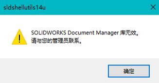
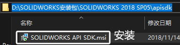

库无效
SOLIDWORKS Document Manager 库无效
如果位于 C:\Program Files\CommonFiles\SolidWorks Shared 的“SwDocumentMgr.dll”文件的版本不正确，则可能出现此错误。将计算机上出现此问题的版本和没有出现此问题的版本进行比较。
要查找版本，右键单击此文件，选择“属性”，然后转到版本选项卡。
方法1安装SDK
方法2：安装修复
修复您的 SOLIDWORKS 安装。
方法3：手动注册
如果“C:\Program Files\Common Files\SOLIDWORKS Shared”文件夹中缺少文件或其版本不正确，则会出现此情况。可以重新注册以下 DLL 文件：
1 | C:\Program Files\Common Files\SOLIDWORKS Shared\sldshellutils14u.dll |
1.以管理员身份打开 Windows 命令提示符。
2.在命令提示符中输入：cd [DLL 路径]
3.接着输入：regsvr32 sldshellutils14u.dll
方法4：设置
恢复文件关联